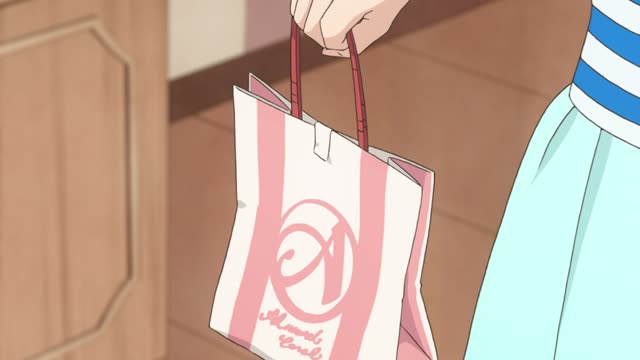
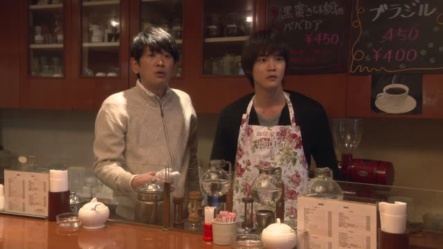
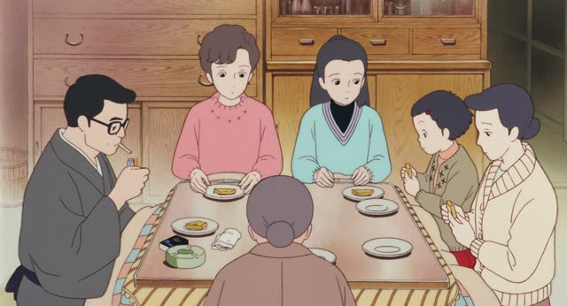
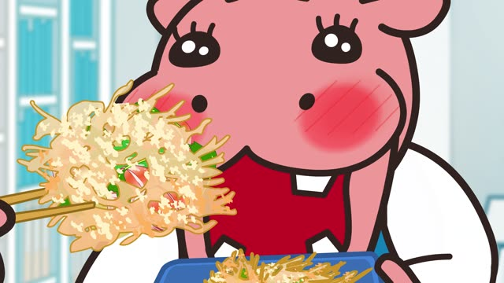
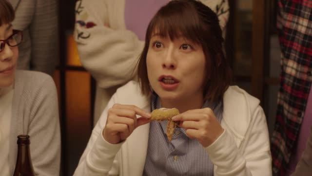

あげる
Kekkon Dekinai Otoko · Episode 1
今 ごはん あげますからね。
"I'll give you your dinner now, okay?"
あげる means to give: something goes away from you (or the person the story is about) to someone else. The thing gets を, the person who gets it gets に: 友達に花をあげる.
It never goes towards you: when someone gives something to you, that's くれる.
On this card, she's just come home and is about to feed her dog. あげます is the polite form.

Teasing Master Takagi-san · Season 2, Episode 5
これ あげる。
"Here, this is for you."
The casual form, plain あげる. On this card, she holds something out to him: これ (this) あげる (I give).
Quick Examples
A coworker asks what you did with your old bike.
弟にあげました。
"I gave it to my little brother."
The receiver gets に: 弟に. Who gave? You, so no need to say it.
PoliteYour friend admires your scarf. You don't wear it anymore.
それ、あげるよ。
"You can have it."
Literally "I'll give it (to you)". From you, to them: あげる.
CasualIt's Valentine's Day. Your friend is holding a box of chocolates.
誰にあげるの？
"Who are you giving them to?"
It also works for other people giving: here your friend gives, someone else gets.
CasualAt the park, a child asks if they can feed your dog.
犬にパンをあげないでください。
"Please don't give the dog bread."
Feeding an animal is also あげる: 犬に + パンを.
PoliteWith and without
友達に本をあげました。
"I gave my friend a book." The book goes away from you, to your friend.
Examples from Media

Good Morning Call · Episode 13
こいつにあげるとかは ありえないです。
"Giving it to this guy is out of the question."
こいつに: the person who would get it takes に.
Kekkon Dekinai Otoko · Episode 8
はい 今ごはん あげますからね。
"Okay, I'm giving you your food now."
Talking to the dog. ごはんをあげる: give food, feed.

Only Yesterday
タエ子にあげる 私も。
"I'll give mine to Taeko too."
Her sisters don't like the fruit, so they hand it to タエ子. The person who gets it takes に.
Teasing Master Takagi-san · Season 2, Episode 2
じゃ チョコあげるね。
"Then I'll give you some chocolate."
Valentine's Day. チョコ(を)あげる: the を is dropped, as often in speech.

Aggretsuko · Season 2, Episode 5
ほら かき揚げ あげる。
"Here, have some kakiage."
かき揚げ is a kind of tempura. ほら: "here", while holding it out.

Midnight Diner: Tokyo Stories · Season 2, Episode 4
人にあげるものじゃないでしょ？
"That's not something you give to people, is it?"
人にあげるもの: "a thing you give to people". The verb describes もの.

Shirokuma Cafe · Episode 38
これあげる。
"Here, you can have this."
Handing something over.

Shirokuma Cafe · Episode 45
少しあげようか。
"Shall I give you a little?"
あげよう + か makes it an offer.
Further Reading
A Dictionary of Basic Japanese Grammar
Entry "ageru¹" · pp. 63–65
Tae Kim's Guide to Japanese Grammar
Giving and Receiving · When to use 「あげる」